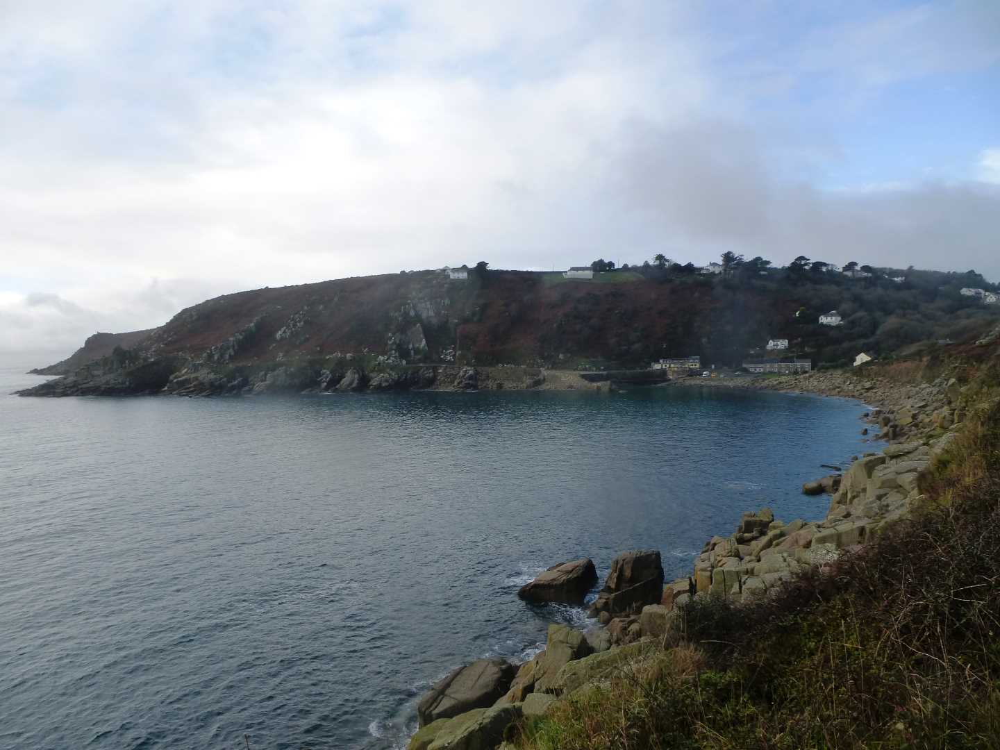
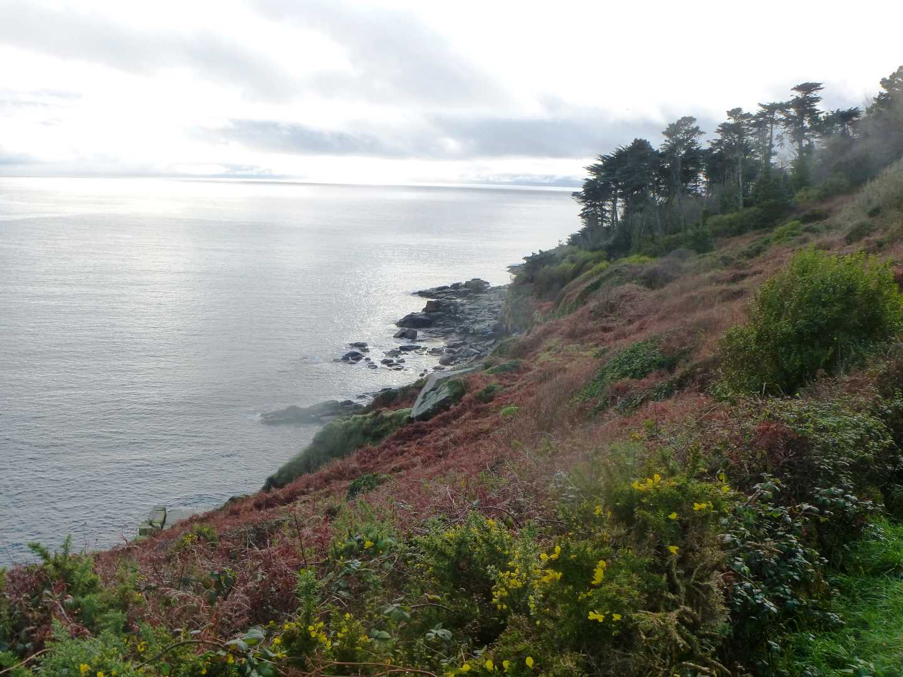

Start Ref: 450 241
End Ref: 450 241
Distance: 4 miles
Time: 3hrs
In places, especially at the start, this footpath is steep, rocky and with sheer drops to our right hand side, in others it is rather steep. However, for those of us who give it a go, we will be rewarded with lovely views out to sea and back towards Lamorna Cove.
We start our walk, by leaving our car in the well sized (if pricy) car park at Lamorna Cove, and walk along the front towards the coastal path. The first part of this walk leads us gently up and through the trees before becoming quite steep on our right hand side, and the footpath feels narrow with a lot of step steps over rocks in the path, as the footpath makes its way up the cliff edge.
It flattens a little as we make our way to the first little headland that is Carn-du, and from here we have a good view back towards Lamorna Cove and also (if the weather is clear) west over to the Beacon at Tater-du.
At Carn-du we follow the path along to the East and over Kemyel Cliffs and drop down into Kemyel Crease Nature Reserve. This reserve has a wealth of good sized evergreen trees which provide good shade on a hot day. The flip to this shade is that the footpath drops down in to the reserve before hiking back up out!
Once past the Reserve, the footpath follows the top line of the cliffs and becomes far easier to walk, and at spots there are benches placed to allow us to stop a while and admire the view. When my wife and I last did this walk, we sat here for a drink and a slice of cake and watched a small pod of dolphins playing in the bay below us. A truly wonderful experience.
Just beyond the bench, and where we feel as if the path has become a little wider and may be about to turn into a bridleway, we find a footpath over our left shoulder. This path is about 200 meters before the path meets the road, so if we make the road we need to turn back. Over the stiles and through the gates we now go as we start the return leg of this walk, passing through 6 fields before reaching Kemyel Drea Farm. As we pass through these fields we keep the hedge lines to our right always keeping our heading in a south westerly direction back towards Lamorna.
After passing through Kemyel Drea, there is a small redirecting of the footpath (well marked) as the footpath then leads us through a little copse and over a footbridge. Beware, the ground just before the bridge and after, if it has been raining, suggests that the footbridge is not long enough!!
The path leads us on towards and through Kemyel Crease, where we will find the footpath on our right as we pass through the farm. The path then leads us over 3 more fields before reaching Higher Kemyel Farm. Here, we need to follow the path to the end of the lane (rather than picking up the footpath on our right, which is on the bend of the lane). If we pick up the wrong path here, we will end up on the road leading into Lamorna, rather than the path we desire, which brings us down the tree lined valley and along the outskirts of the quarry that runs alongside Lamorna. Again, this section can be steep, but there is on section which gives us great views as the path weaves left and right in an effort to reduce the angle of the footpath.
As we approach the bottom of this valley, we come back on to a wider white lane track which leads us in front of the houses which front on to the car park at Lamorna, and our walk is finished.
In summer the road down to the quay can get very busy, and feels like it is only suitable for one vehicle at a time, but before braving the return trip up this road, there is a cafe where refreshments can be had.
I hope that you enjoy.